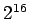

Der IDEA-Algorithmus wurde 1991 von LAI und MASSAY zum Patent vorgelegt. Wie beim DES-Algorithmus handelt es sich um ein symmetrisches Verschlüsselungsverfahren; IDEA ist ein potentieller Nachfolger für DES. Der Algorithmus ist insbesondere als Bestandteil des bekannten Softwarepakets PGP (Pretty Good Privacy) zur Verschlüsselung von e-mails bekannt geworden. Im Unterschied zu DES wurde nicht nur der Algorithmus veröffentlicht, sondern auch seine Entwurfsgrundlagen. Ziel war die Verwendung möglichst einfacher Operationen (Addition modulo 2, Addition modulo , Multiplikation modulo 216+1).
Mit IDEA kann man 64-Bit-Klartextblöcke verschlüsseln und bei Wahl der Teilschlüssel in umgekehrter Reihenfolge wieder entschlüsseln. Zur Verschlüsselung wird jeder 64-Bit-Klartextblock in vier Teilblöcke von je 16 Bit aufgeteilt. IDEA benutzt 128-Bit-Schlüssel, aus denen 52 Teilschlssel von je 16 Bit erzeugt werden. In 8 Verschlüsselungsrunden werden jeweils 6 dieser Teilschlüssel benötigt; die restlichen 4 Teilschlüssel werden in einer Ausgabetransformation mit den vier Textblöcken verknüpft und abschließend zu einem 64-Bit-Schlüsseltextblock zusammengesetzt.
IDEA ist etwa doppelt so schnell wie DES, in Hardware jedoch schwieriger zu implementieren. Öffentlich sind keine erfolgreichen Angriffe gegen IDEA bekannt geworden. Angriffe durch Ausprobieren aller Schlüssel bleiben bei der Schlüssellänge von 128 Bit wirkungslos.